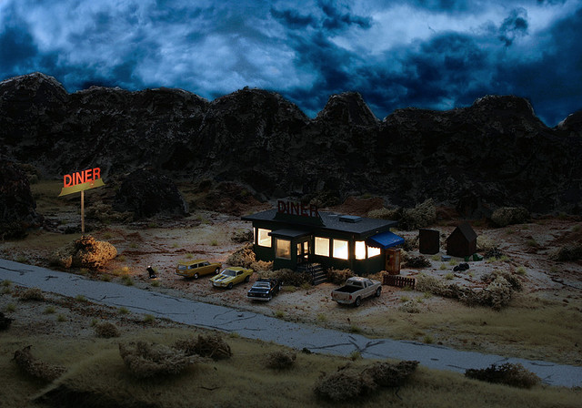

No Country for Small Men
Photographer Florian Tremp recreated and photographed a number of scenes from No Country for Old Men using incredibly detailed models and photographic techniques. This series reminds me of Strange Worlds photographs—and making of—that I posted a few months back.
Via Kitsune Noir